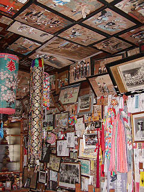
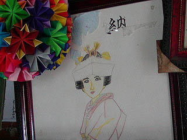

黒鳥観音/山形県東根市
東根市にある黒鳥観音。十九番目の札所だ。
観音堂には赤い幟が立ち正面は納札で埋めつくされている。見慣れていないのでこれだけ納札が貼ってあると異様な光景に思える。
納札にはそれぞれ巡礼者の名前が書いてある。これを一つ一つの札所に貼付けていくのだろう。巡礼の回数によって納札の色もかわってくるらしい。建物の見た目よりも信仰の篤さに重きを置く姿勢は普段お寺を観光施設のひとつとしか捉えていない私のような者には強烈なインパクトがある。
で、その札に埋め尽くされた扉をそっと開けてみると・・・
何じゃこりゃあああ〜！
さして広くない堂内の壁という壁は納札やムカサリ絵馬で埋め尽くされている。その他千羽鶴や遺影などで壁面が完全に隠れてしまっている。正直いってかなりグロテスクだ。
正面には中央に本尊の十一面観音、左右に三十三観音が祀られており天井からは提灯がぶら下がっている。
その天井を見上げると・・・

天井にもムカサリ絵馬がびっしりと貼りめぐらされていた。
あまりにも篤い信仰心に満ちあふれた濃密な空間に圧倒された。堂内には物凄く重く濃い空気が充満しているようだった。
伝統ある本堂の建築美とか美しく整えられた庭とか文化財になった仏像とかそんなものが信仰の賜物とされる御時世だが本当の篤い信仰の行き着く先はこのような生々しいグロテスクな光景なのだということを思い知らされる。これぞ信仰の極みが生み出した本当の姿なのだ。
 さらに追い討ちをかけるように天井からぶら下がる謎の信仰ツール。布を棒状に縫って周りに鈴を付けたものは一体何の用途で使うのでしょうか？用途を御存じの方、教えて下さい。
さらに追い討ちをかけるように天井からぶら下がる謎の信仰ツール。布を棒状に縫って周りに鈴を付けたものは一体何の用途で使うのでしょうか？用途を御存じの方、教えて下さい。
追記（2003.9.1.)
この鈴が付いた棒状のモノは神社の鈴やお寺の鰐口と同じような用途で、山形の旧家の神棚（と仏壇が上下セットになっているそうです）にはこれと同じようなものが吊るされているそうです。
〜Sanae♪さんの情報〜
また畳の上には大量の木魚が。これだけの木魚を一斉に使う事などあるのだろうか？あるから置いてあるのだろうが。
堂内の片隅には婚礼人形も納められていた。山寺や若松観音でも婚礼人形を見かけた。この婚礼人形は一般的に青森県に多く見られるものとされるがこうして山形でも奉納されているということは、実は一般的にいわれているよりも広範囲にわたる供養形態なのではなかろうか。
天井に貼られている絵馬は明治や大正のもので中には破れてしまっているモノもある。
これは大正時代のもの。この頃の絵馬には屏風や床の間、掛け軸などが書き込まれたモノが多い。また屋外での婚礼風景（嫁迎え）なども題材としては結構多かった。

色鉛筆で描かれた絵馬。薄い色彩は遠目に見ているとまるでどこかに消え去ってしまいそうな危うさが漂っている。
戒名を見ると女の子のもので昭和18年に亡くなっている。奉納されたのは平成4年となっている。60才を過ぎてからの結婚式である。
あの世で幸せになれたのだろうか。御冥福をお祈りいたします。
時代とともオリジナリティが少しづつ失われつつある感のあるムカサリ絵馬だが、逆にいうとそれだけ時代を繁栄しているということは伝統に縛られることなく現在進行形で進化しているアクティブな信仰形態であることの証なのではなかろうか。
そういう意味で戦前のものよりもむしろ近年に奉納された絵馬のほうが私にとっては興味深かった。
今回は最上三十三観音のうち幾つかの寺を巡っただけだったが、これ以外の寺にもたくさんのムカサリ絵馬が存在することだろう。
皆さんも山形を訪れた際、観音堂の欄間などを見上げて欲しい。そこでは今日も明日も明後日も無言の婚礼が繰り広げられているはずだ。
おしまい
１ 山寺/山形県山形市
2 唐松観音、六椹観音/山形県山形市
3 若松観音/山形県天童市
4 黒鳥観音/山形県東根市
ムカサリ絵馬へ戻る
珍寺大道場 HOME